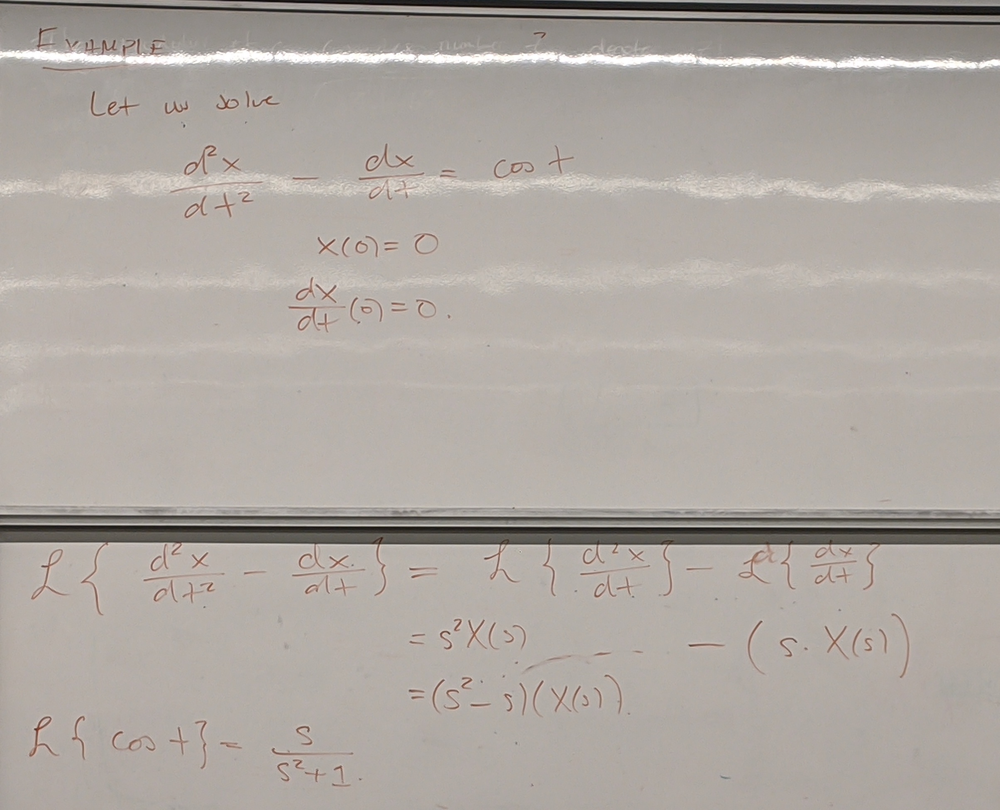
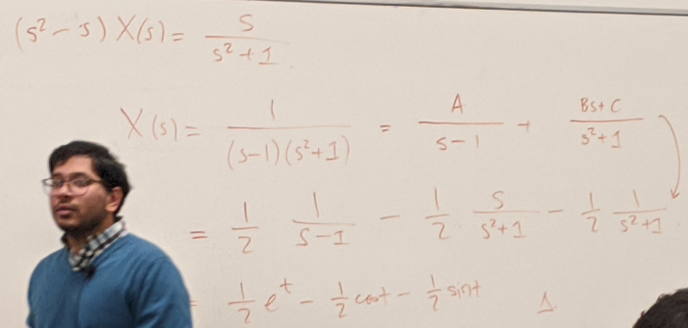
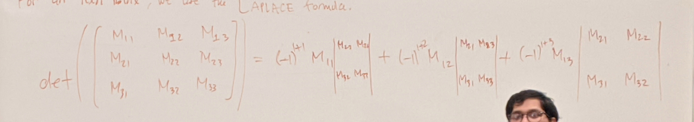
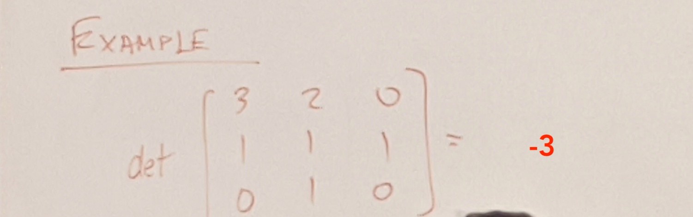
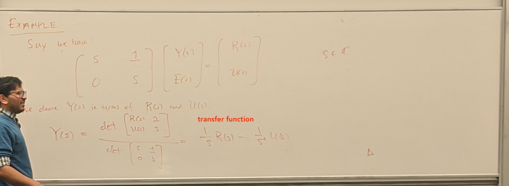

= {j1mu}
A complex number z\; \epsilon\; \mathbb{C} is a pair of real numbers a,\;b \epsilon \mathbb{R}
z = a + \iu b
where \iu^2 = -1
z_1 = a + b\iu z_2 = c + d\iu
z_1 + z_2 = a + c + (b + d)\iu
z_1 \times z_2 = ac - bd + (bc + ac)\iu
z = r (cos \theta + sin \theta)
r = |z| = \sqrt(a^2 + b^2)
The principal argument of z,denoted arg(z), is the ange \theta\;\epsilon\;(-\pi, \pi] so that z = r (cos \theta + sin \theta)
z = |z|(cos(arg(z)) + sin(arg(z)))
Recall
e^{j\theta} = cos(\theta) + \iu sin(\theta)
We can write z = a + \iu b\; \epsilon\; \mathbb{C}
z = |z|e^{\iu arg(z)}
If we have z_1, z_2\;\epsilon\;\mathbb{C}
z_1z_2 = |z_1||z_2|e^{\iu(arg(z_1) + arg(z_2))}
Verify for yourself that for z \epsilon\;\mathbb{C}
z^{-1} = \frac{\bar{z}}{|z|^2}\;\;\;z\neq 0 where \bar{z} = a - \iu b = |z|e^{\iu (-arg(z))}
Let f: \R \rightarrow \R be an integral signal where f(t)\; =\; 0 \;\forall\; t\; <\; 0
Suppose there exists constants M, \t_0, k\;\epsilon \R so that f(t) \leq Me^{tk}\;\;\;\forall t \geq t_0
Then
\int_{0}^{\infty} f(t)e^{-ts}dt converges for Re\{s\} > k
We define the Laplace transform of f(t), F(s) or \mathbb{L}\{f(t)\} as
F(s) = \int_{0}^{\infty} f(t)e^{-ts}dt
| f(t) | F(s) |
|---|---|
| f(t) = 1 | F(s) = \frac{1}{s} |
| f(t) = at | F(s) = a\frac{1}{s^2} |
| f(t) = e^{at} | F(s) = \frac{1}{s-a} |
Recall that if we have \frac{df(t)}{dt}, the Laplace transform is
\mathbb{L}\{\frac{df(t)}{dt}\} = sF(s) - f(0)
\mathbb{L}\{\frac{d^nf(t)}{dt}\} = s^nF(s) - s^{n-1}f(0) - s^{n-2}f^{(1)}(0) \cdots - f^{(n-1)}(0)


A vector in \mathbb{R}^n is an array of n real numbers x_1, \dots, x_n denoted
X = (x_1, x_2, \dots, x_n) = \begin{bmatrix} x_1\\ \vdots\\ x_n \end{bmatrix}
A matrix that is m\times n Real is simply an array of m-rows and n-columns
M = \begin{bmatrix} M_{11} & \dots & M_{1n}\\ \vdots & &\\ M_{n1} & \dots & M_{nn} \end{bmatrix}
If we want to multiply a matrix M with a vector X
\begin{bmatrix} M_{11} & M_{12} & M_{13}\\ M_{21} & M_{22} & M_{23} \end{bmatrix} \begin{bmatrix} x_1\\ x_2\\ x_3 \end{bmatrix} = \begin{bmatrix} {M_{11}x_1 + M_{12}x_2 + M_{12}x_3}\\ {M_{21}x_1 + M_{22}x_2 + M_{22}x_3}\\ \end{bmatrix} = \begin{bmatrix} b_1\\ b_2 \end{bmatrix} \;\;\;\text{where }{b_1,\;b_2}\text{ are constants}
Given a matrix A that is square n\times n, and a vector b\;\epsilon\;\mathbb{R}^n when is there a solution to Ax = b
Recall a map known as the determinant denoted as det(A)
In particular if det(A) \neq 0 then we can always solve that equation
In fact, there exists an A^{-1} so that A\cdot A^{-1} = A^{-1}\cdot A = I_n where I is the identity matrix
\begin{aligned} A^{-1} Ax = A^{-1}b\\ x =A^{-1}b \end{aligned}
det(\begin{bmatrix} a & b\\ c & d \end{bmatrix}) = ad-bc
\begin{bmatrix} a & b\\ c & d \end{bmatrix}^{-1} = \frac{1}{ad-bc} \begin{bmatrix} d & -b\\ -c & a \end{bmatrix}
For an n\times n matrix, we use the Laplace formulae recursion


Lets say A is an n\times n matrix
Lets saw we have encountered an equation of the form \begin{bmatrix} M_{11} & M_{12} & M_{13}\\ M_{21} & M_{22} & M_{23}\\ M_{31} & M_{32} & M_{33} \end{bmatrix}\begin{bmatrix} x_1\\ x_2\\ x_3 \end{bmatrix} = \begin{bmatrix} b_1\\ b_2\\ b_3 \end{bmatrix}
We can show
x_1 =\frac{\begin{bmatrix} b_{1} & M_{12} & M_{13}\\ b_{2} & M_{22} & M_{23}\\ b_{3} & M_{32} & M_{33} \end{bmatrix}}{det(M)}\text{ and so on}
